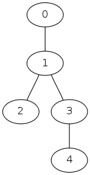
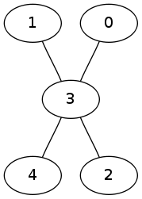
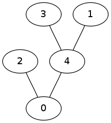

A university professor has distributed a graph with M nodes to her N students, and asked them to generate a spanning tree of the graph. To try to avoid cheating, she has reordered the nodes in each graph sent to students, and kept a mapping so she can decode the submissions later.
In the meanwhile, the secret service has become suspicious of certain students, and decided to capture the submissions. They found that some students cheated and copied the homeworks of other students (renumbering the nodes in their spanning trees as necessary).
Your task is to scan the submissions and find trees that are copies of each other.
The first line of the input contains N and M. The following N lines each contains a tree described by A1 B1 A2 B2 ... A{M-1} B{M-1} numbers, where Ai - Bi is an edge (Ai and Bi are the indices of two nodes, nodes are indexed starting from zero).
Each line of the output should contain the indices of trees which are copies of each other. The index of a tree without any copy should be alone on its line.
Trees are indexed from zero and the order of the indices in the output does not matter.
3 5 0 1 1 2 1 3 3 4 3 4 1 3 0 3 3 2 4 0 2 0 3 4 1 4
0 2 1
The three input trees are:
|  |  |  |